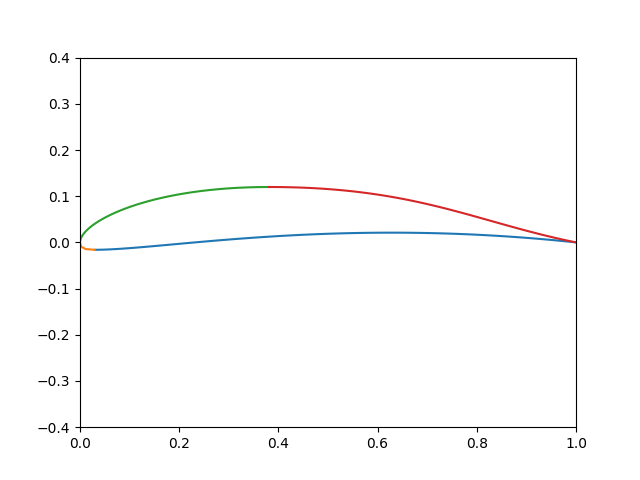

翼型のベジェ曲線表現
翼型の外形を4つの3次ベジェ曲線で表現してみる。
描画

import matplotlib.pyplot as plt
import numpy as np
def bezier3(p0, p1, p2, p3, n):
ts = [i/n for i in range(n)]
ts.append(1)
def f(t):
a0 = (1-t)**3
a1 = 3 * (1-t)**2 * t
a2 = 3 * (1-t)* t**2
a3 = t**3
return (
a0*p0[0] + a1*p1[0] + a2*p2[0] + a3*p3[0],
a0*p0[1] + a1*p1[1] + a2*p2[1] + a3*p3[1]
)
return map(f, ts)
def bezier_params_to_points(upper, lower, front, rear, n):
# 点数の割り振り
part1 = abs(lower[0]) + 1 - lower[2]
part2 = abs(lower[0]) + lower[2]
part3 = abs(upper[0]) + upper[2]
part4 = abs(upper[0]) + 1 - upper[2]
total = part1 + part2 + part3 + part4
# 後縁下側
ps1 = list(bezier3(
(lower[2], lower[0]), (lower[3], lower[0]),
(rear[0], rear[1]), (1, 0),
int(n * part1 / total)))
# 前縁下側
ps2 = list(bezier3(
(0, 0), (0, front[0]),
(lower[1], lower[0]), (lower[2], lower[0]),
int(n * part2 / total)))
# 前縁上側
ps3 = list(bezier3(
(0, 0), (0, front[1]),
(upper[1], upper[0]), (upper[2], upper[0]),
int(n * part3 / total)))
# 後縁上側
ps4 = list(bezier3(
(upper[2], upper[0]), (upper[3], upper[0]),
(rear[2], rear[3]), (1, 0),
int(n * part4 / total)))
return (ps1, ps2, ps3, ps4)
# 上端・下端の(y1, x2, x1, x3)
upper = (0.11991, 0.13077, 0.38109, 0.67725)
lower = (-0.015984, 0.0063793, 0.029729, 0.17167)
# 前縁下側、前縁上側のコントロールポイント(y1,y2)
front = (-0.011888, 0.041121)
# 後縁下側、後縁上側のコントロールポイント(x1,y1,x2,y2)
rear = (0.51552, 0.055408, 0.79526, 0.044435)
n = 200
pss = bezier_params_to_points(upper, lower, front, rear, n)
for ps in pss:
xs = list(map(lambda p: p[0], ps))
ys = list(map(lambda p: p[1], ps))
plt.plot(xs, ys)
plt.xlim(0, 1)
plt.ylim(-0.4, 0.4)
plt.show()
xfoilの解析へ
import subprocess
# 上端・下端の(y1, x2, x1, x3)
upper = (0.11991, 0.13077, 0.38109, 0.67725)
lower = (-0.015984, 0.0063793, 0.029729, 0.17167)
# 前縁下側、前縁上側のコントロールポイント(y1,y2)
front = (-0.011888, 0.041121)
# 後縁下側、後縁上側のコントロールポイント(x1,y1,x2,y2)
rear = (0.51552, 0.055408, 0.79526, 0.044435)
n = 200
pss = bezier_params_to_points(upper, lower, front, rear, n)
pss[0].reverse()
pss[1].reverse()
ps = []
ps.extend(pss[0][:-1])
ps.extend(pss[1][:-1])
ps.extend(pss[2][:-1])
ps.extend(pss[3])
with open('test.dat', 'w') as f:
f.writelines(map(lambda p: '%.4f'%p[0] + ' ' + '%.4f'%p[1] + '\n', ps))
path2xfoil = r'C:\Program Files\XFOIL6.99\xfoil.exe'
proc = subprocess.Popen(path2xfoil, stdin=subprocess.PIPE)
command = """LOAD test.dat
newfoil
OPER
ITER 100
VISC 8e5
PACC
result.txt
ASeq -5 20 0.5
QUIT
"""
proc.communicate(command.encode('utf-8'))